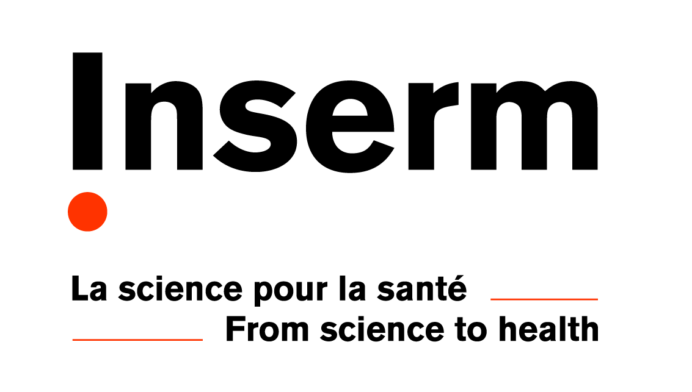
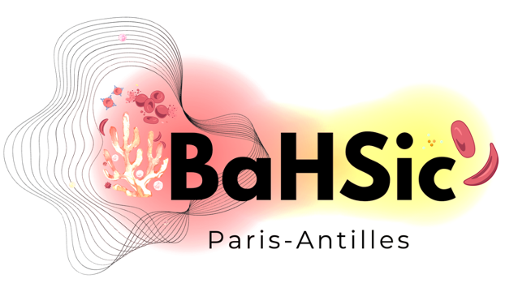
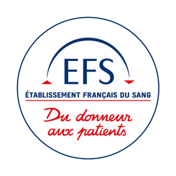
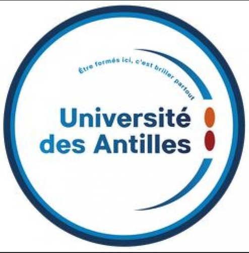

Hematopoiesis & Translational Research: blood cell biology, multi-omic approaches, and translational studies.
Phone 01 81 72 43 14


Follow the lab and receive updates on research, publications and events.